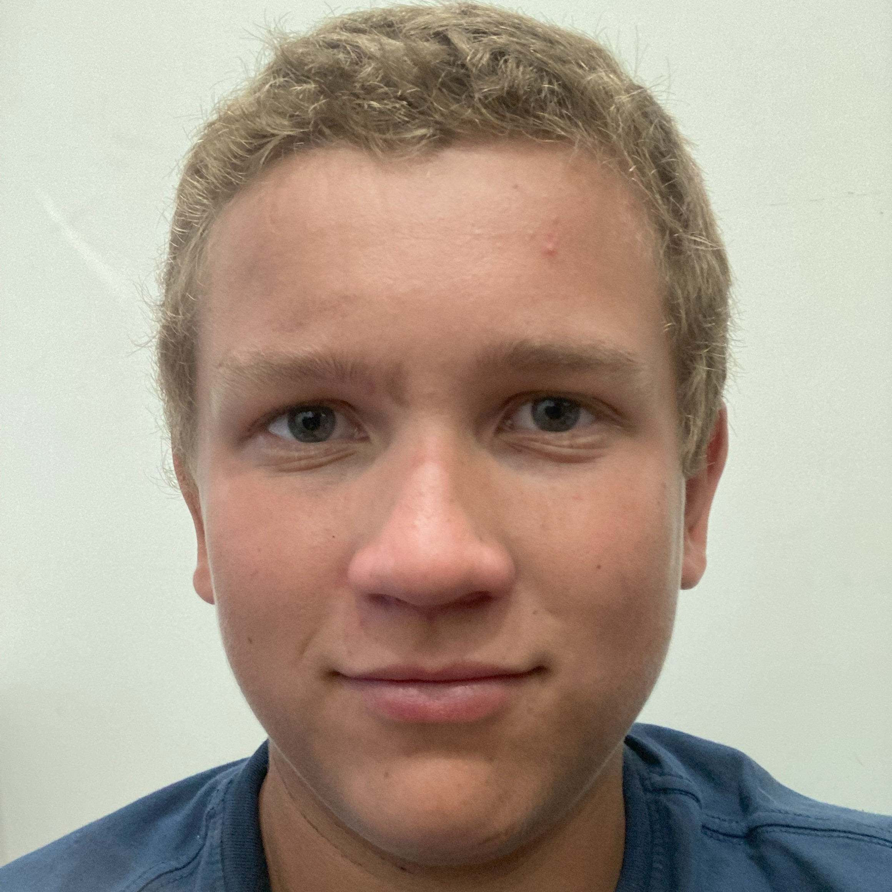

About Dylan Hyrkas
Hello, I'm Dylan Hyrkas. I am a 14 year old with extensive experience in 3D printing, laser engraving, and plasma cutting. My expertise spans a range of programming languages and design software, which I leverage to deliver high-quality results.
Skills
Software: Visual Studio Code, Fusion 360, AutoCAD Mechanical, LightBurn, Various 3D Printing Slicers, Torchmate
Programming Languages: Python, C++, HTML, CSS (basic)
Proficient in 3D printing, laser engraving, and plasma cutting.
Competent in Linux command-line interface and file system management.
Owner of an Ender 3D printer with an upgraded board and custom firmware.
Was able to create a resume and build a website with it with only 3 hours of going to meet a potential employer.
Python
C++
HTML
Experience
Designed and 3D printed a specialized tool for Mohawk Tech.
Produced 3D printed components for Somero.
Worked at Motion Motors for approximately two years.
Currently employed at Paul Hyrkas Construction (PHC) since May 5th.
Education
Completed 8th grade education at WMS. Accelerated to algebra at Copper Island Academy, but later transferred to WMS and continued algebra during 8th grade. Consistently performed at the top of my class in Math, Science, and Social Studies.
Recognized by the Principal of WMS (now Superintendent of Calumet Schools) and entrusted with a $1,600 Bambu Lab 3D printer for home use over the summer.
High school robotics teacher invited me to come learn some robotics while in 8th grade.